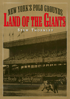

<body bgcolor="#FFFFFF" text="#000000" link="#0000FF" vlink="#CC0000" alink="#CC0000"><center><hr width="350" size="1" align="center" noshade>A rich history of one of the most hallowed of former baseball parks<hr width="350" size="1" align="center" noshade><p><a href="https://cdcshoppingcart.uchicago.edu/Cart/ChicagoBook.aspx?ISBN=9781566397964&&PRESS=temple" target="_top">Buy this book!</a> | <a href="https://cdcshoppingcart.uchicago.edu/Cart/Cart.aspx?PRESS=temple" target="_top">View Cart</a> | <a href="https://cdcshoppingcart.uchicago.edu/Cart/Cart.aspx?PRESS=temple" target="_top">Check Out</a></p><p></p></center><!--none//--><h1>Land of the Giants</h1>
<H2>New York's Polo Grounds</H2>
<h3>Stew Thornley</h3>
<P>cloth 1-56639-796-0 $55.50, Sep 00, <FONT COLOR=#990033>Available</FONT>
<BR> 192 pp
7x10
6&nbsp;tables 1&nbsp;figure 39&nbsp;halftones
</P><BLOCKQUOTE><I>"I think Stew Thornley's book on the Polo Grounds is a worthy one. There are other books on old ball parks...but I don't think anything else is as definitive on this historic ball park. Thornley brings to life not only the various Polo Ground sites but the significant figures in Giants lore&#151John McGraw, Christy Mathewson, Carl Hubbell, Mel Ott, and Willie Mays among others. I think I know more than a little about the Giants and the Polo Grounds, but I found myself learning more about the team and the ball park.
Thornley has done exhaustive research.... I would want this book in my library for sure."</I>
<br>&#151<b>Stan Isaacs</b>, National Headliners Award-winning sportswriter, former columnist for <I>Newsday</I>, and co-author (with Marty Glickman) of <I>The Fastest Kid on the Block</I><I></I></BLOCKQUOTE>
<p>More than thirty years after its demolition, the Polo Grounds&#151like some other urban neighborhood parks such as Ebbets Field, Yankee Stadium, Fenway Park, and Wrigley Field&#151still holds a place in the hearts of baseball fans.
<p>The Polo Grounds was the home of the New York Giants from John McGraw and Christy Mathewson to Carl Hubbell and Mel Ott to Willie Mays and Leo Durocher. It was also home to the Yankees when Babe Ruth's home run production was soaring (which led to "the House that Ruth built") and home to the Mets in their painful early years.
<p>From "Merkle's Boner," which cost the New York Giants a pennant, to Bobby Thomson's homer, which won them one, Stew Thornley retells the legendary events of the park and its legendary personalities. He reveals little-known facts, too:
<blockquote><p>When the championship Giants and Yankees played in the 1921 and 1922 World Series, it wasn't a "subway series," because the two teams shared the same ballpark.
<p>The team Mays was playing for when he hit his first home run in the Polo Grounds was not the Giants, but the Birmingham Black Barons. The Polo Grounds was also the site for two Negro World Series games in 1946 and 1947.</blockquote>
<p>Fans cherish not only the historic moments and team traditions of these stadiums, but treasure their physical peculiarities. Like the "Green Monster" at Fenway Park, the unusual horseshoe shape of the Polo Grounds made the park a special place to play. Stew Thornley analyzes the effect of the very short porches along the foul lines and a cavernous center field on home run production and hitting in general.
<p>Baseball wasn't the only sport played in the Polo Grounds. The football Giants played here from 1925 to 1955, but the stadium was better known for some of the great college games, including the 1924 Army-Notre Dame game in which the "Four Horsemen" of Notre Dame were christened. Numerous boxing title bouts were held at the Polo Grounds, and it also hosted tennis, rodeo, midget auto racing, outdoor opera, ice skating, and religious rallies.
<BR>&nbsp;<h2>Excerpt</h2><P>Excerpt available at <a href="http://www.temple.edu/tempress">www.temple.edu/tempress</a></p>
<BR>&nbsp;<h2>Reviews</h2>
<p><I>"I went to high school at Boys High in Brooklyn and after classes we ran to Ebbets Field to try to sneak in before game time. But on weekends I took the subway to my true love, the Polo Grounds, to root for my heroes&#151Mell Ott, Carl Hubbell, and the great Jo-Jo Moore from Gausse, Texas. Thanks, Stew, for bringing it all back so vividly."</I>
<br>&#151<b>Larry Ritter</b>, author of <I>The Glory of Their Times</I>
<BR>&nbsp;<P><p>Visit Stew Thornley's personal website: <a href="http://stewthornley.net" target="new">http://stewthornley.net</a>.</P><BR>&nbsp;<br>
<h2>Contents</h2><P>
<p>Acknowledgments
<br>1. Oddest of the Odd
<br>2. The Original Polo Grounds
<br>3. Major League Baseball in New York
<br>4. New Location, Same Name
<br>5. Polo Grounds III
<br>6. A Grand New Stadium
<br>7. Home Runs and Hubbell
<br>8. The Final Years
<br>9. Boxing to Buffalo Bill
<br>Appendix A: Polo Grounds Park Factors
<br>Appendix B: Summary of Championship Events and Other Highlights at the Polo Grounds
<br>Essay on Sources
<br>Index
</P><BR>&nbsp;<H2>About the Author(s)</H2>
<table><tr><td valign="top"><img src="/tempress/authors/1540_au.gif" height="90" width="75"></td><td width="100%" valign="middle"><p><B>Stew Thornley</B> is a freelance writer and former radio sportscaster who has published a variety of books on sports and other topics. He is also an official scorer for Minnesota Twins games.</P></td></tr></table>
<BR><H2>Subject Categories</H2>
<p><A HREF="/tempress/sports.html" TARGET="_top">Sports</a>
<BR><A HREF="/tempress/urban.html" TARGET="_top">Urban Studies</a>
</p>
<p align="center"><a href="https://cdcshoppingcart.uchicago.edu/Cart/ChicagoBook.aspx?ISBN=9781566397964&&PRESS=temple" target="_top">Buy this book!</a> | <a href="https://cdcshoppingcart.uchicago.edu/Cart/Cart.aspx?PRESS=temple" target="_top">View Cart</a> | <a href="https://cdcshoppingcart.uchicago.edu/Cart/Cart.aspx?PRESS=temple" target="_top">Check Out</a></p><p><font face="Arial" size="1"><a href="copyright.html" onMouseOver="window.status='Web Copyright Policy';return true;" onMouseOut="window.status=''" title="Web Copyright Policy">&copy;</a> 2015 <a href="http://www.temple.edu" target="new" onMouseOver="window.status='Link to Temple University home page';return true;" onMouseOut="window.status=''" title="Link to Temple University home page">Temple University</a>. All Rights Reserved. http://www.temple.edu/tempress/titles/1540_reg.html</font></p>